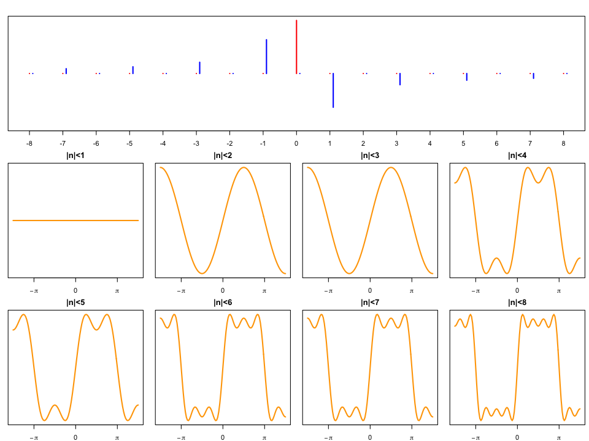

信号処理 - 講義5
(Press ? for help, n and p for next and previous slide)
村田 昇
ベクトル空間
線形演算について閉じた空間
内積空間
内積が定義されたベクトル空間
Hilbert 空間
ノルムに関して完備な内積空間
定理
可分な無限次元Hilbert空間には 可算個 の要素からなる完全正規直交系が存在する．
定理
可分な無限次元Hilbert空間は \(l^{2}\) 空間と同型である．
定理
\(\{\phi_{k}\}\) が \(\mathcal{H}\) の完全正規直交系のとき 以下が成り立つ．
\begin{equation} \forall u\in\mathcal{H}\;\Rightarrow\; u=\sum_{k}\langle u,\phi_{k}\rangle\phi_{k} \end{equation}
定理
\(f\in L^{2}(-\pi,\pi)\) は 以下のように Fourier 級数展開 される．
\begin{align} f(x) &=\sum_{n=-\infty}^{\infty}\langle f,\phi_{n}\rangle\phi_{n}(x) \end{align}\begin{equation} \phi_{n}(x)=\frac{1}{\sqrt{2\pi}}e^{inx},\;n=0,\pm1,\pm2,\dotsc \end{equation}内積は \(f,g\in L^{2}(-\pi,\pi)\) に対して 以下で定義する．
\begin{equation} \langle f,g\rangle =\int_{-\pi}^{\pi}f(x)\overline{g(x)}dx \end{equation}
以下の関数 \(f\) を Fourier 級数展開せよ．
\begin{equation} f(x)= \begin{cases} 0,&x\le 0\\ 1,&x > 0 \end{cases} \quad \in L^{2}(-\pi,\pi) \end{equation}
\(n=0\) のとき
\begin{align} \langle f,\phi_{0}\rangle &=\int_{0}^{\pi}\frac{1}{\sqrt{2\pi}}dx =\frac{\pi}{\sqrt{2\pi}} \end{align}
\(n\not=0\) のとき
\begin{align} \langle f,\phi_{n}\rangle &=\int_{0}^{\pi}\frac{1}{\sqrt{2\pi}}e^{-inx}dx\\ &=\left[ \frac{1}{-in}\cdot\frac{1}{\sqrt{2\pi}}e^{-inx} \right]_{0}^{\pi} =\frac{i}{n}\cdot\frac{1}{\sqrt{2\pi}}(e^{-in\pi}-1)\\ &=\frac{i}{n\sqrt{2\pi}}((-1)^{n}-1) =\begin{cases} \frac{-2i}{n\sqrt{2\pi}},&\text{\(n\)が奇数}\\ 0,&\text{\(n\)が偶数} \end{cases} \end{align}
Fourier 級数展開
\begin{align} f(x) &=\sum_{n=-\infty}^{\infty}\langle f,\phi_{n}\rangle\phi_{n}(x)\\ &=\frac{1}{2}+\sum_{n\not=0}\frac{i\{(-1)^{n}-1\}}{2\pi n}e^{inx}\\ &=\frac{1}{2}+\sum_{m=-\infty}^{\infty}\frac{-i}{\pi(2m+1)}e^{i(2m+1)x} \end{align}

定義
\(h>0\) として
\begin{align} f(x{-}0)&=\lim_{h\to0}f(x-h)\\ f(x{+}0)&=\lim_{h\to0}f(x+h) \end{align}と書く． これを片側極限という．
不連続関数
点 \(x\) において不連続な関数を考える
\begin{equation} f(x{-}0)\not=f(x{+}0) \end{equation}点 \(x\) 以外の近傍での有界性を仮定する
\begin{align} &\sup_{0 < h < \delta}|f(x-h)-f(x{-}0)| < \infty\\ &\sup_{0 < h < \delta}|f(x+h)-f(x{+}0)| < \infty \end{align}
定理で評価した式
\begin{equation} f_{r}(x)-f(x) =\int_{-\pi}^{\pi}P_{r}(y)\{f(x-y)-f(x)\}dy \end{equation}\begin{equation} P_{r}(x) =\frac{1}{2\pi} \sum_{n=-\infty}^{\infty}r^{|n|}e^{inx} \end{equation}
\(P_{r}\) の性質
\(P_{r}\) の積分は偶関数であることから以下が成り立つ．
\begin{align} \int_{-\infty}^{0}P_{r}(y)dy&=\frac{1}{2}\\ \int_{0}^{\infty}P_{r}(y)dy&=\frac{1}{2} \end{align}
不連続点まわりでの評価
\begin{align} &\Bigl|\int_{-\delta}^{\delta}P_{r}(y)\{f(x-y)-f(x)\}dy\Bigr|\\ &\le \Bigl|\int_{-\delta}^{0}P_{r}(y)\{f(x-y)-f(x{+}0)\}dy\Bigr|\\ &\quad+\Bigl|\int_{0}^{\delta}P_{r}(y)\{f(x-y)-f(x{-}0)\}dy\Bigr|\\ &\le \frac{1}{2}\sup_{-\delta < y < 0}|f(x-y)-f(x{+}0)|\\ &\quad+\frac{1}{2}\sup_{0 < y < \delta}|f(x-y)-f(x{-}0)|\\ &\to^{\delta\to0}0 \end{align}
不連続点の Fourier 級数展開
関数 \(f\) の Fourier 級数展開 \(\tilde{f}\) は
\begin{equation} \tilde{f}(x) =\lim_{r\to1}\int_{-\pi}^{\pi}P_{r}(y)f(x-y)dy =\frac{f(x{-}0)+f(x{+}0)}{2} \end{equation}が成り立つので， \(f\) の不連続点での Fourier 級数展開は 両側からの極限の平均値となる．
以下の関数 \(f\) は \(x=0\) で不連続となる． Fourier 級数での \(f(0)\) の値を求めよ．
\begin{equation} f(x)= \begin{cases} 0,&x\le 0\\ 1,&x > 0 \end{cases} \quad \in L^{2}(-\pi,\pi) \end{equation}
Fourier 級数展開に代入すればよい
\begin{align} f(0) &=\frac{1}{2}+\sum_{n\not=0}\frac{i\{(-1)^{n}-1\}}{2\pi n}\\ &=\frac{1}{2}+\sum_{n=1}^{\infty} \left\{\frac{i\{(-1)^{-n}-1\}}{-2\pi n}+\frac{i\{(-1)^{n}-1\}}{2\pi n}\right\}\\ &=\frac{1}{2} =\frac{f(0{-}0)+f(0{+}0)}{2} \end{align}
定義
周期 \(2\pi\) をもつ関数 \(f\) と \(g\) の 畳み込み (合成積; convolution) \(h\) を以下で定義される．
\begin{align} h(x) &=\int_{-\pi}^{\pi}f(x-y)g(y)dy \\ &=\int_{-\pi}^{\pi}f(y)g(x-y)dy \\ &= f*g(x) \end{align}
定義
関数 \(f\) の \(L^{p}\) ノルムを以下で定義する．
\begin{equation} \|f\|_{L^{p}}=\left(\int_{\Omega}|f(x)|^{p}dx\right)^{1/p} \end{equation}ただし \(\Omega\) は定義域で，一般には \(\mathbb{R}\) 上の適当な区間．
定義
\begin{align} L^{p}(\Omega) &=\left\{f\;\Big|\int_{\Omega}|f(x)|^{p}dx < \infty\right\}\\ &=\left\{f\;\big|\|f\|_{L^{p}} < \infty\right\} \end{align}
定理
\(f\in L^{1}(-\pi,\pi)\) の Fourier 係数 \(a_{n}=\langle f,\phi_{n}\rangle\) は
\begin{equation} \lim_{n\to\pm\infty}a_{n}=0 \end{equation}となる．
証明
\(f_r\) の Fourier 係数を \(a_{n}(r)\) と書くと
\begin{align} |a_{n}| &\le|a_{n}-a_{n}(r)|+|a_{n}(r)|\\ &=|a_{n}-a_{n}(r)|+|a_{n}|r^{|n|}\\ &\le\frac{1}{\sqrt{2\pi}}\|f-P_{r}*f\|_{L^{1}} +\frac{1}{\sqrt{2\pi}}r^{|n|}\|f\|_{L^{1}} \end{align}ただし \(*\) は畳み込みを表す．
ここで \(r\) を1に近くとれば第1項はいくらでも小さくすることができる． また \(|n|\) を十分大きくとれば第2項はいくらでも小さくなるので， \(\lim_{n\to\pm\infty}a_{n}=0\) が示される．
(証明のつづき)
最後の不等号は以下を用いればよい．
\begin{align} |a_{n}| &=\left|\int f(x)\frac{1}{\sqrt{2\pi}}e^{-inx}dx\right|\\ &\le\frac{1}{\sqrt{2\pi}}\int\left|f(x)e^{-inx}\right|dx\\ &=\frac{1}{\sqrt{2\pi}}\int\left|f(x)\right|dx =\frac{1}{\sqrt{2\pi}}\|f\|_{L^{1}} \end{align}
Fourier 級数の項別微分
関数 \(f\) は区間 \([-\pi,\pi]\) で連続， \(f(-\pi)=f(\pi)\) ， ほとんどいたるところで \(f'\) が存在し， \(f'\in L^{2}\cap L^{1}\) であるとする． \(f,f'\) の Fourier 級数展開をそれぞれ 以下で表す．
\begin{align} f(x)&=\sum_{n} a_{n}\phi_{n}(x)\\ f'(x)&=\sum_{n} b_{n}\phi_{n}(x) \end{align}\(f\) を項別に微分して \(a_{n}\) と \(b_{n}\) の間の以下の関係を得る．
\begin{equation} b_{n}=in\cdot a_{n} \end{equation}
滑らかな関数の高周波成分
Riemann-Lebesgue の定理より \(b_{n}\to0\;(n\to\infty)\) なので， \(a_{n}=o(1/n)\) (Landau の記号)となる． すなわち微分できるくらい滑らかな関数は \(n\to\infty\) において \(1/n\) より速く \(a_{n}\) が小さくなる (高周波成分が減衰する)．
定理
\(1/p+1/q=1,\,p,q>0\) とする． このとき
\begin{equation} \left|\int_{\Omega} u(x)v(x)dx\right|\leq\|u\|_{L^{p}}\|v\|_{L^{q}} \end{equation}
証明
対数関数の凸性と \(1/p+1/q=1\) から 任意の \(a,b>0\) について
\begin{equation} \log\left(\frac{a^{p}}{p}+\frac{b^{q}}{q}\right) \geq \frac{1}{p}\log a^{p} + \frac{1}{q}\log b^{q} = \log ab \end{equation}が成り立つ．
(証明のつづき)
また対数関数の単調性から
\begin{equation} \frac{a^{p}}{p}+\frac{b^{q}}{q} \ge ab \end{equation}が成り立つ．したがって
\begin{align} &\frac{1}{\|u\|_{L^{p}}\|v\|_{L^{q}}} \left|\int u(x)v(x)dx\right| \le \int\frac{|u(x)|}{\|u\|_{L^{p}}}\frac{|v(x)|}{\|v\|_{L^{q}}}dx\\ &\quad\le \frac{1}{p\|u\|_{L^{p}}^{p}}\int|u(x)|^{p}dx + \frac{1}{q\|v\|_{L^{q}}^{q}}\int|v(x)|^{q}dx\\ &\quad=\frac{1}{p}+\frac{1}{q}=1 \end{align}
定理
\begin{equation} h(x)=\int_{-\pi}^{\pi}f(x-y)g(y)dy \end{equation}とするとき
\begin{equation} \|h\|_{L^{p}}\leq\|g\|_{L^{1}}\|f\|_{L^{p}} \end{equation}
証明
\(1/p+1/q=1\) とする．
\begin{align} |h(x)| &\le \int|f(x-y)g(y)|dy\\ &= \int|f(x-y)||g(y)|^{\frac{1}{p}}|g(y)|^{\frac{1}{q}}dy\\ &\le \left(\int|f(x-y)|^{p}|g(y)|dy\right)^{\frac{1}{p}} \left(\int|g(y)|dy\right)^{\frac{1}{q}} \end{align}が成り立つ．
(証明のつづき)
これより
\begin{align} \|h\|_{L^{p}}^{p} &=\int|h(x)|^{p}dx\\ &\le \|g\|_{L^{1}}^{\frac{p}{q}} \int\int|f(x-y)|^{p}|g(y)|dydx\\ &= \|g\|_{L^{1}}^{\frac{p}{q}} \int|f(x-y)|^{p}dx\int|g(y)|dy\\ &= \|g\|_{L^{1}}^{\frac{p}{q}+1} \|f\|_{L^{p}}^{p} = \|g\|_{L^{1}}^{p} \|f\|_{L^{p}}^{p} \end{align}
係数の存在
先の定理において \(p=1\) とすると
\begin{equation} \|h\|_{L^{1}}\le\|f\|_{L^{1}}\|g\|_{L^{1}} \end{equation}となり， \(f,g\in L^{1}(-\pi,\pi)\) なら \(h\in L^{1}(-\pi,\pi)\) となる． このことから 畳み込み \(h\) の Fourier 係数が存在することが保証される．
係数の関係
\(f,g,h\) の Fourier 係数をそれぞれ \(a_{n},b_{n},c_{n}\) とすると
\begin{align} c_{n} &=\frac{1}{\sqrt{2\pi}}\int h(x) e^{-inx}dx\\ &=\frac{1}{\sqrt{2\pi}}\int\int f(x-y)g(y)dy e^{-inx}dx\\ &=\frac{1}{\sqrt{2\pi}}\int\int f(x-y)e^{-in(x-y)}g(y)e^{-iny}dxdy\\ &=\sqrt{2\pi}\cdot\frac{1}{\sqrt{2\pi}}\int f(z)e^{-inz}dz \cdot\frac{1}{\sqrt{2\pi}}\int g(y)e^{-iny}dy\\ &=\sqrt{2\pi}a_{n}b_{n} \end{align}という関係が成り立つ．
関数 \(f\) を
\begin{equation} f(x)= \begin{cases} 0,&x\le 0\\ 1,&x > 0 \end{cases} \quad \in L^{2}(-\pi,\pi) \end{equation}
とするとき，畳み込み \(f*f\) を求めよ．
周期関数であることに注意して定義に従って計算する．
\begin{align} f(x-y) &= \begin{cases} 0,&x\le y\\ 1,&x > y \end{cases}\\ f*f(x) &=\int_{-\pi}^{\pi}f(x-y)f(y)dy \\ &= \begin{cases} x, &x \ge 0\\ -x, &x < 0 \end{cases} \end{align}
Fourier 級数展開: